기계설계기사 (2010-05-09 기출문제)
1과목: 재료역학
1. 밀도가 일정한 정육면체형 물체의 각 변의 길이가 처음의 3배로 되었을 때 이 정육면체의 바닥면에 발생되는 자중에 의한 수직 응력의 크기는 처음의 몇 배가 되겠는가?
- 1
- 3
- 9
- 27
(정답률: 알수없음)

2. 균일분포하중 ω를 받고 있는 길이가 L인 단순보의 처짐을 δ로 제한한다면 균일 분포하중의 크기는 어떻게 표현되겠는가? (단, 보의 단면은 폭이 b이고 높이가 h인 직사각형이고 탄성계수는 E이다.)
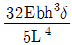
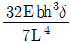
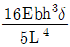
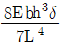
(정답률: 알수없음)
3. 코일 스프링의 소선의 지름을 d, 코일의 평균 지름을 D, 코일 전체 길이가 L인 경우 인장하중 W를 작용시킬 때 전체의 처짐량(δ)을 나타내는 식은? (단, G는 전단 탄성계수이고, n은 코일의 감김 수이다.)
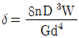
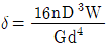
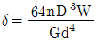
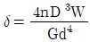
(정답률: 알수없음)
4. 아래 그림에서 모멘트의 최대값은 몇 kN·m 인가? (단, B정은 고정이다.)
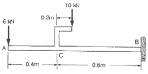
- 10
- 16
- 26
- 40
(정답률: 알수없음)
5. 길이가 2m인 환봉에 인장하중을 가하였더니 길이 변화랑이 0.14cm였다. 이 때의 변형률은?
- 70 × 10-6
- 700 × 10-6
- 70
- 700
(정답률: 알수없음)
6. 지름 d인 원형단면 봉이 비틀링 모멘트 T를 받을 때, 발생되는 최대 전단응력 r를 나타내는 식은? (단, IP는 단면의 극단면 2차 모멘트이다.)
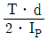
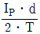
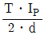
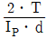
(정답률: 알수없음)
7. 그림과 같이 균일 분포하중(ω)을 받는 균일 단면 외팔보의 자유단 B에서의 처짐량은? (단, 보의 굽힘 강성 EI는 일정하고, 자중은 무시한다.)
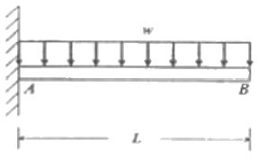
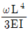
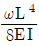
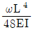
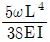
(정답률: 알수없음)
8. 내부 반지름 1.25m, 압력 1200kPa, 두께 10mm인 원형 단면의 실린더형 압력 용기에서의 축방향 응력(σt: longitudinal stress)과 후프응력(σz: circumferential stress)를 구하면?
- σt=75MPa, σz=150MPa
- σt=150MPa, σz=75MPa
- σt=37.5MPa, σz=75MPa
- σt=75MPa, σz=37.5MPa
(정답률: 알수없음)
9. 그림과 같은 복합 막대가 각각 단면적 AAB=100mm2, ABC=200mm2을 갖는 두 부분 AB와 BC로 되어있다. 막대가 100kN의 인장하중을 받을 때 총 신장량을 구하면 몇 mm인가? (단, 재료의 탄성계수(E)는 200GPa 이다.)
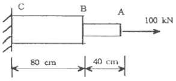
- 2
- 4
- 6
- 8
(정답률: 알수없음)
10. 어떤 재료의 탄성계수 E=210GPa이고 전단 탄성계수 G=83GPa이라면 이 재료의 포아송 비는? (단, 재료는 균일 및 균질하며, 선형 탄성거동을 한다.)
- 0.265
- 0.115
- 1.0
- 0.435
(정답률: 알수없음)
11. 그림과 같은 균일 단면의 돌출보(overhangiing beam)에서 반력 RA는? (단, 보의 자중은 무시한다.)
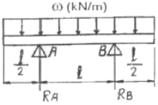
- ωℓ
- ωℓ/4
- ωℓ/3
- ωℓ/2
(정답률: 알수없음)
12. 그림과 같은 균일 원형단면을 갖는 양단 고정봉의 C점에 비틀림 모멘트 T=98N·m를 작용시킬 때, 하중점(C점)에서의 비틀림 각은 몇 rad 인가? (단, 전단탄성계수 G=78.4GPa, 극관성모멘트 IP=600cm4이다.)
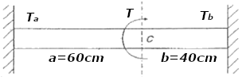
- 4×10-4
- 4×10-5
- 5×10-4
- 5×10-5
(정답률: 알수없음)
13. 탄성계수 E=200GPa, 좌굴응력 σb=320MPa인 강재 기둥에 오일러(Euler) 공식을 적용할 수 있는 한계 세장비는? (단, n은 양단 지지 상태에 따른 좌굴 계수이다.)
- 62.5√n
- 78.5√n
- 85.5√n
- 90.5√n
(정답률: 알수없음)
14. 지름 6mm인 곧은 강선을 지름 1.2m의 원통에 감았을 때 강선에 생기는 최대 굽힘 응력은 약 및 MPa 인가? (단, 탄성계수 E=200GPa 이다.)
- 500
- 800
- 900
- 1000
(정답률: 알수없음)
15. 그림과 같은 보는 균일단면 부정정보이다. 반력 RB를 구하는데 필요한 조건은?
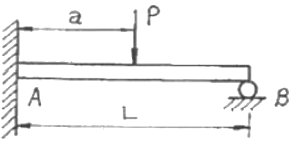
- 지정 B에서의 반력에 의한 처짐
- 지정 A에서의 굽힘모멘트의 방향
- 하중 작용점 P에서의 처짐
- 하중 작용정 P에서의 굽힘응력
(정답률: 알수없음)
16. 내부 반지름 Ri, 외부 반지름 Ro인 속이 빈 원형 단면의 극(polar) 관성 모멘트는?
- (π/2)(Ro3-Ri3)
- (π/2)(Ro4-Ri4)
- (π/4)(Ro3-Ri3)
- (π/4)(Ro4-Ri4)
(정답률: 알수없음)
17. 5cm×10cm 단면의 3개의 목재를 목재용 접착제로 접착하여 그림과 같은 10cm×15cm의 사각 단면을 갖는 합성보를 만들었다. 접착부에 발생하는 전단응력은 약 몇 kPa 인가? (단, 이 보의 길이는 2m이고, 양단은 단순지지이며 중앙에 P=800N의 집중하중을 받는다.)
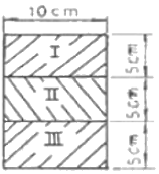
- 77.6
- 35.5
- 8
- 160
(정답률: 알수없음)
18. 다음 그림과 같이 단면적인 A인 강봉의 축선을 따라 하중 P가 작용할 때, 임의의 경사 평면에서 전단응력이 최대가 될 때의 면의 각(α)과 이 경우에 해당하는 전단응력(τmax)은 얼마인가?
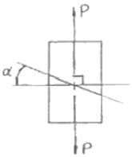
- α=45°, τmax=P/A
- α=45°, τmax=P/2A
- α=90°, τmax=P/A
- α=90°, τmax=P/2A
(정답률: 알수없음)
19. 그림과 같이 초기온도 20°C, 초기길이 19.95cm, 지름 5cm인 봉을 간격이 20cm인 두 벽면 사이에 넣고 봉의 온도를 220°C로 가열했을 때 봉에 발생되는 응력은 몇 MPa 인가? (단, 균일 단면을 갖는 봉의 선팽창계수 a=1.2×10-5/°C 이고, 탄성계수 E=210GPa이다.)
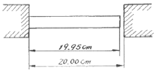
- 0
- 25.2
- 257
- 504
(정답률: 알수없음)
20. 그림에서 블록 A를 뽑아내는 데 필요한 힘 P는 몇 N 이상인가? (단, 블록과 접촉면과의 마찰 계수 μ=0.4 이다.)
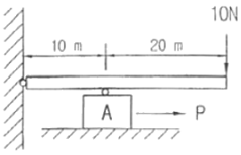
- 4
- 8
- 10
- 12
(정답률: 알수없음)
2과목: 기계제작법
21. 아크 용접에 있어서 교류와 직류의 경우에 관한 설명 중 틀린 것은?
- 교류는 직류에 비해서 아크의 안정성이 떨어진다.
- 교류는 비피복봉 사용이 가능하고, 직류는 비피복봉 사용이 불가능하다.
- 교류는 극성변화가 불가능하고. 직류는 극성변화가 가능하다.
- 직류는 전격의 위험이 적고, 교류는 전격의 위험이 많다.
(정답률: 알수없음)
22. 절삭과정에서 공구의 온도를 측정하는 방법으로서 열전대를 사용하는 경우가 많다. 공구에 열전대를 삽입하기 위한 가공법으로 다음 중 가장 적합한 것은?
- 화학 연마
- 전해 연마
- 방전 가공
- 버핑 가공
(정답률: 알수없음)
23. 상하의 형에 문자나 무늬의 요철을 붙이고, 이 사이에 소재를 놓고 압축하여 문자나 무늬를 생성하는 가공 방법은?
- 압출 가공(extruding)
- 업세팅 가공(up setting)
- 압인 가공(coining)
- 블랭킹 가공(blanking)
(정답률: 알수없음)
24. 아세틸렌가스는 매우 타기 쉬운 기체이다. 자연발화 온도는?
- 780 ~ 790°C
- 406 ~ 408°C
- 5⑤ ~ 515°C
- 62 ~ 80°C
(정답률: 알수없음)
25. 두께 2mm의 철판에 Ф20mm의 구멍을 뚫을 때, 펀칭에 가하는 힘은 최소 및 N 이상이어야 하는가? (단, 철판의 전단저항은 450MPa 이다.)
- 42132
- 56559
- 12561
- 27867
(정답률: 알수없음)
26. 소성 가공 방법이 아닌 것은?
- 컬링(curling)
- 엠보싱(embossirg)
- 카핑(copying)
- 코이닝(coining)
(정답률: 알수없음)
27. 얇은 판재로 된 목형은 변형되기 쉽고 주물의 두께가 균일하지 않으면 용융금속이 냉각 응고시에 내부 응력에 의해 변형 및 균열이 발생할 수 있으므로 이를 방지하기 위한 목적으로 쓰이고 사용한 후에 제거하는 것은?
- 구배
- 수축 여유
- 코어 프린트
- 덧붙임
(정답률: 알수없음)
28. 열처리에서 강(鋼)을 청화물(CN)과 작용시켜 침탄과 질화가 동시에 일어나도록 하는 청화법(cyaniding)은 다음과 같은 장·단점이 있다. 틀린 것은?
- 균일한 가열이 이루어지므로 변형이 적다.
- 온도 조절이 용이하다
- 산화가 일어나기 쉽다.
- 침탄층이 얇고 가스가 유독하다.
(정답률: 알수없음)
29. 커플링으로 연결된 CNC 공작기계의 볼 스크류 피치가 6[mm], 서보 모터의 회전 각도가 270° 일 때 테이블의 이동 거리는?
- 1.5[mm]
- 2.5[mm]
- 3.5[mm]
- 4.5[mm]
(정답률: 알수없음)
30. 주물사의 구비조건이 아닌 것은?
- 통기성이 좋을 것
- 성형성이 좋을 것
- 열전도성이 높을 것
- 내열성이 높을 것
(정답률: 알수없음)
31. 소성가공시 열간공과 냉간가공은 무엇으로 구별하는가?
- 재결정 온도
- 변태점 온도
- 당금질 온도
- 풀림 온도
(정답률: 알수없음)
32. 방전가공시 전극(가공공구) 재질로 적당하지 않은 것은?
- 황동
- 텅스텐
- 구리
- 알루미늄
(정답률: 알수없음)
33. 이미 치수를 알고 있는 표준 값과의 편차를 구하여 치수를 알아내는 측정방법은?
- 절대 측정
- 비교 측정
- 간접 측정
- 직접 측정
(정답률: 알수없음)
34. 하방잠김형, 압착형, 당기기형, 직선이동형과 같이 4가지 기본적인 클램핑 작용을 하며 작용력에 비해 고정력이 매우 큰 클램프는?
- 토굴 클램프
- 캠 클램프
- 후크 클램프
- 스트랩 클램프
(정답률: 알수없음)
35. 다음 중 바이트의 마모와 관계없는 것은?
- Crater wear
- Filling
- Flank wear
- Chipping
(정답률: 알수없음)
36. 저탄소강의 표면에 탄소를 침투시키는 고체 침탄법에 대한 일반적인 설명으로 틀린 것은?
- 침탄시간이 길어지면 침탄깊이가 깊어진다.
- 소량생산에 적합하다.
- 큰 부품의 처리가 가능하다.
- 보통 침탄 깊이는 5~ 10mm 이다.
(정답률: 알수없음)
37. 프레스 작업(press working) 가공방식이 아닌 것은?
- 래핑(lapping)
- 벤딩(bending)
- 드로잉(drawing)
- 엠보싱(embossirg)
(정답률: 알수없음)
38. 급속귀환 운동을 하는 기계는 다음 증 어느 것인가?
- 선반
- 밀링
- 셰이퍼
- 드릴링머신
(정답률: 알수없음)
39. 3차원 측정기는 X.Y.Z의 3차원 공간상에서 측정점의 좌표점을 검출하여, 데이터를 컴퓨터로 처리하는 측정기이다. 3차원 측정기를 조작상으로 분류할 때 여기에 해당되지 않는 것은?
- 수동형(floating type)
- 조이스틱형(joystick type)
- CNC형(CNC type)
- 겐트리형(gantry type)
(정답률: 알수없음)
40. 동시에 여러 개의 드릴을 설치하여 공작물에 여러 개의 구멍을 동시에 뚫는 구조의 드릴링머신은 무엇인가?
- 탁상드릴링머신(bench drilling machine)
- 레이디얼드릴링머신(radial drilling machine)
- 직립드릴링머신(Upright drilling machine)
- 다축드릴링머신(mmulti spindle drilling machine)
(정답률: 알수없음)
3과목: 기계설계 및 기계재료
41. 세레이션(serratior)에 대한 일반적인 설명 중 틀린 것은?
- 스플라인에 비하여 치수(齒數)가 많다.
- 삼각치 세레이션은 끼워맞춤 정밀도가 나쁘고 작업 공수가 많다.
- 세레이션은 주로 정적인 이음에만 사용된다.
- 측압 강도가 작아서 같은 바깥지름의 스플라인에 비해 큰 회전력을 전달할 수 없다.
(정답률: 알수없음)
42. 그림과 같은 리벳이응에서 피치를 p, 리벳지름을 d, 판의 두께를 T, 판의 인장응력을 ft라고 할 때 리벳효율 η를 구하면? (단, 리벳의 전단응력은 fs이다.)
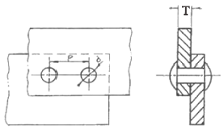
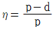
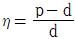
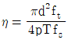
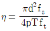
(정답률: 알수없음)
43. 4각 나사에서 리드각 3.83°, 마찰계수 μ=0.1일 때, 이 나사의 효율을 구하면?
- 28.77%
- 32.75%
- 39.83%
- 42.56%
(정답률: 알수없음)
44. 지름 8cm의 중실 원형축과 비틀림 강도가 같은 중공축(바깥지름과 안지름의 비 x=0.6)의 바깥지름은 몇 mm인가?
- 83.79mm
- 86.76mm
- 85.75mm
- 90.35mm
(정답률: 알수없음)
45. 다음 중 전위기어의 특징으로 거리가 먼 것은?
- 두 축간 중심거리의 조절이 가능하다.
- 언더컷을 방지한다.
- 이의 강도를 증가시킬 수 있다.
- 베어링 압력을 작게 할 수 있다.
(정답률: 알수없음)
46. 안지를 1500mm인 보일러 동체가 70 N/cm2의 내압을 받는다면 동체를 만든 강판의 인장강도가 350N/mm2, 안전계수가 4, 이음효율이 65%, 부식여유가 1mm라고 할 때 이 동체의 두께는 약 몇 mm인가?
- 6.5
- 8.3
- 9.2
- 10.2
(정답률: 알수없음)
47. 평균지름이 55mm이고 소선의 지름이 5mm인 코일 스프링에 하중이 1kN 이 가해질 때 스프링에 발생하는 최대 전단 응력은 몇 GPa 인가? (단, Wahl 응력수정계수 K를 적용하며, 그 식은
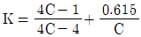
이고, 여기서 C는 스프링지수이다.)- 3.148
- 2.214
- 1.266
- 0.953
(정답률: 알수없음)
48. 안지름 70mm 길이 85mm의 놋쇠메탈의 저널 베어링을 400rpm으로 회전하는 전동축에 사용 했을 때 몇 kN의 베어링 하중을 지지할 수 있는가? (단, 압력속도계수 pv=1N/mm2·m/s 이다.)
- 약 1.53kN
- 약 2.⑤kN
- 약 3.24kN
- 약 4.06kN
(정답률: 알수없음)
49. 굽힘 모멘트 M과 비틀림 모멘트 T가 동시에 작용하는 축의 설계에서 최대 전단 응력설에 의한 상당 비틀림 모멘트(equivalent twisting moment) Te 를 구하는 식은?
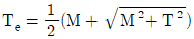
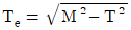
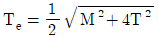
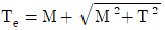
(정답률: 알수없음)
50. 내연기관 실린더에서 폭발이 일어 날 때 회전축에 큰 회전토크를 발생시키고, 또 다른 폭발이 있을 때까지 새로운 에너지의 공급 없이 회전하게 된다. 이와 같은 폭발간격으로 인하여 구동토크의 크기 변동과 회전각속도가 변동될 때 각속도의 변동을 줄여주는 역할을 하는 것은?
- 관성차(fly wheel)
- 래칫 휠(rachet wheel)
- 밴드 브레이크(band brake)
- 원판 브레이크(disk brake)
(정답률: 알수없음)
51. 다음 중 서브제로(sub-Zero)처리에 대한 설명으로 틀린 것은?
- 잔류오스테나이트를 마텐자이트화 한다.
- 공구강의 경도증가와 성능을 향상시킨다.
- 스테인리스강에는 우수한 기계적 성질을 부여한다.
- 충격값을 증가시키고 시효에 의한 치수변화가 생긴다.
(정답률: 알수없음)
52. 다음 중 스프링 강의 기호를 나타내는 것은?
- SCM4
- SNCM8
- SPS9
- STS3
(정답률: 알수없음)
53. 다음 주강품에 대한 설명 중 틀린 것은?
- 주조한 것은 내부응력이 있다.
- 주조 후는 일반적으로 풀림(Annealing)을 한다.
- 평균 주조 수축율은 약 2%이다.
- 중탄소 주강은 0.1~0.2%C 범위이다.
(정답률: 알수없음)
54. 게이지강이 갖추어야 할 조건으로 틀린 것은?
- 내마모성이 크고, HRC55 이상의 경도를 가질 것
- 담금질에 의한 변형 및 균열이 적을 것
- 오랜 시간 경과하여도 치수의 변화가 적을 것
- 열팽창계수는 구리와 유사하며 취성이 좋을 것
(정답률: 알수없음)
55. 주조할 때 주물표면을 금속형 등으로 급냉하여 백선화시켜서 경도를 높이고 내마모성, 내압성을 향상시킨 주철은?
- 구상흑연주칠
- 칠드주철
- 가단주철
- 규소주철
(정답률: 알수없음)
56. 쾌삭강(Free cutting steel)에 절삭속도를 크게하기 위하여 첨가하는 주된 원소는?
- Ni
- Mn
- W
- S
(정답률: 알수없음)
57. Fe-Fe3C 평형 상태도의 723°C(A1)에서 일어나는 변태로부터 나타나는 조직은?
- 마텐자이트
- 오스테나이트
- 펄라이트
- 베이나이트
(정답률: 알수없음)
58. 다음 중 가단주철을 설명한 것으로 가장 적합한 것은?
- 기계적 특성과 내식성, 내열성을 향상시키기 위해 Mn, Si, Ni, Cr, Mo, V, Al, Cu 등의 합금원소를 첨가한 것이다.
- 탄소량 2.5% 이상의 주철을 주형에 주입한 그 상태로 흑연을 구상화한 것이다.
- 표면을 칠(chill)상에서 경화시키고 내부조직은 펄라이트와 흑연인 회주철로 해서 전체적으로 인성을 확보한 것이다.
- 백주철을 고온도로 장시간 풀림해서 시멘타이트를 분해 또는 감소시키고 인성이나 연성을 증가시킨 것이다.
(정답률: 알수없음)
59. 탄소강을 풀림(Annealing)하는 목적과 관계없는 것은?
- 결정입도 조절
- 상온가공에서 생긴 내부응력 제거
- 오스테나이트에서 탄소를 유리시킴
- 재료에 취성과 경도부여
(정답률: 알수없음)
60. 40~50% Ni을 함유한 합금이며, 전기저항이 크고 저항온도 계수가 작으므로 전기저항선이나 열전쌍의 재료로 많이 쓰이는 Ni-Cu합금은?
- 엘린바
- 라우탈
- 콘스탄탄
- 인바
(정답률: 알수없음)
4과목: 기구학 및 CAD
61. 다음 중 곡면(surface) 모델에 해당하지 않는 사항은?
- NC 가공에 필요한 곡면정보를 가지고 있다.
- 체적을 계산할 수 있다.
- 셰이딩(shading) 처리를 하면 현실감 나는 모델을 화면에서 볼 수 있다.
- 설계하고자 하는 부품의 일부 표면을 모델링할 때 적당하다.
(정답률: 알수없음)
62. 2차원 CAD에서 원을 지정하는 일반적 방법이 아닌 것은?
- 원의 중심과 반경을 지정한다.
- 원의 중심과 원주상의 한 정을 지정한다.
- 4개의 통과하는 정을 지정한다.
- 원의 반경과 두 개의 접하는 직선을 지정한다.
(정답률: 알수없음)
63. 하나의 pixel에 6bit를 저장할 수 있고 color look-up table에 12bit를 저장할 수 있는 color monitor에 대한 설명으로 잘못된 것은?
- Lookup table에 저장할 수 있는 색의 가지수는 218이다.
- 사용자가 선택할 수 있는 색의 가지수는 212이다.
- Monitor상에서 동시에 display할 수 있는 색의 가지수는 26이다.
- 색을 표현하는데 빨강색, 초록색, 파랑색에 각각 4bit의 정보를 할당할 수 있다.
(정답률: 알수없음)
64. 서로 다른 CAD/CAM 시스템 사이의 데이터 교환 수단으로서 적당하지 않은 것은?
- DXF
- IGES
- PHIGS
- STEP
(정답률: 알수없음)
65. 날개형 모서리(winged-edge) 데이터 구조에 대하여 틀린 것은?
- 면의 구멍 루프를 다룰 수 있다.
- 면이 아닌 모서리를 중심으로 한다.
- 모서리에는 인접하는 2개의 면에 대한 정보가 포함되어 있다.
- 모서리에는 양단의 꼭지점에 인접한 모든 모서리에 대한 정보가 있다.
(정답률: 알수없음)
66. 곡선의 성질 중에서 점선벡터의 변화량과 가장 관련이 깊은 것은?
- 곡률(curvature)
- 곡선의 길이
- 현의 길이
- 호의 길이
(정답률: 알수없음)
67. NURBS(Nonuniform rational B-spline)의 표현식은 다음과 같다. 이 식에 관련된 다음 설명 중 틀린 것은?
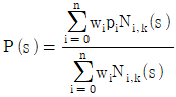
- w : 가중치인자
- p : 조정정의 좌표
- 구간내에서 기초함수 Ni,k(s)의 값은 0과 1사이의 값을 가진다.
- Wi가 모두 1인 경우,
 이다.
이다.
(정답률: 알수없음)
68. 솔리드 모델링 기법중의 하나로서 특정규칙에 의하여 여러 개의 반공간의 교집합으로 표현되는 기본적인 형상들을 기하학적인 불리안 연산으로 조합하여 실제 물체를 생성하는 기법은?
- B-rep
- CSG
- Sweeping
- 피쳐기반모델링
(정답률: 알수없음)
69. 점(2, 1)을 중심으로 점(x, y)를 2배 확대하여 점(x', y')을 다음 식으로 구하고자 한다. A에 들어가야 할 내용은?
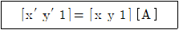
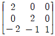
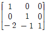
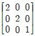
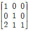
(정답률: 알수없음)
70. 다음 중 파라메트릭 모델링의 일반적 특징이 아닌 것은?
- 도형에 대하여 구속조건의 부여가 가능하다.
- 변수 테이블을 사용한다.
- 불리안(Boolean) 작업에 의해서 수행된다.
- 유사한 형상들의 모델링에 유용하다.
(정답률: 알수없음)
71. 동일한 기어에서 지름피치(D.P)가 클수록 잇수와 이의 크기와의 관계를 옳게 설명한 것은?
- D.P가 클수록 잇수가 많아지고, 이의 크기는 작아진다.
- D.P가 클수록 잇수가 적어지고, 이의 크기는 작아진다.
- D.P가 클수록 잇수는 적어지고, 이의 크기는 커진다.
- D.P와는 관계가 없다.
(정답률: 알수없음)
72. 두 축의 연장선이 만나는 마찰차는?
- 홈붙이 마찰차
- 원통 마찰차
- 원뿔 마찰차
- 스큐우(skew) 마찰차
(정답률: 알수없음)
73. 다음 운동 전달기구 중에서 원동절과 종동절의 각속도비가 일정하지 않은 것은?
- 타원마찰차
- 스퍼기어
- 벨트전동기구
- 윙기어
(정답률: 알수없음)
74. 벨트 전동 장치에서 전달동력에 대한 설명으로 틀린 것은?
- 접촉각이 클수록 큰 동력을 전달시킬 수 있다.
- 마찰계수의 값이 클수록 큰 동력을 전달시킬 수 있다.
- 원심장력이 클수록 전달동력이 증가 된다.
- 장력비가 클수록 전달동력이 커진다.
(정답률: 알수없음)
75. 다음 중에서 가장 정확한 속도비를 얻을 수 있는 전동장치는?
- 평 벨트
- V 벨트
- 로프
- 체인
(정답률: 알수없음)
76. 압력각이 20°이고, 모듈이 5, 잇수가 60개인 표준스퍼기어의 법선 피치는 약 얼마인가?
- 4.7mm
- 14.8mm
- 20.7mm
- 28.2mm
(정답률: 알수없음)
77. 축이 구멍이 있는 기소(機素)에 끼워져 대우를 이루고 있는 경우의 자유도는?
- 1
- 2
- 3
- 4
(정답률: 알수없음)
78. 바로걸기 벨트전동기구에서 원동차의 직경(DA)이 1000mm이고, 회전수(NA)가 120rpm 이며, 종동차의 직경(DB)이 500mm 일 때 종동차의 회전수(NB)는 몇 rpm 인가? (단, 벨트는 전동 중에 미끄럼 및 늘어나지 않는다고 가정하고 벨트 두께는 무시한다.)
- 280
- 240
- 120
- 60
(정답률: 알수없음)
79. 그림과 같은 기어열을 만들어 속도비 12를 만들려할 때 각 기어들의 잇수를 옳게 표시한 것은?
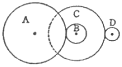
- ZA=90, ZB=30, ZC=80, Z0=20
- ZA=30, ZB=40, ZC=50, Z0=60
- ZA=20, ZB=50, ZC=70, Z0=80
- ZA=30, ZB=60, ZC=20, Z0=100
(정답률: 알수없음)
80. 자동차의 창 닦기 기구나 만능 제도기 등에 응용된 크랭크 기구는?
- 레버 크랭크 기구
- 이중 크랭크 기구(평행 크랭크 기구)
- 이중 레버 기구(양 레버 기구)
- 왕복 슬라이더 크랭크 기구
(정답률: 알수없음)